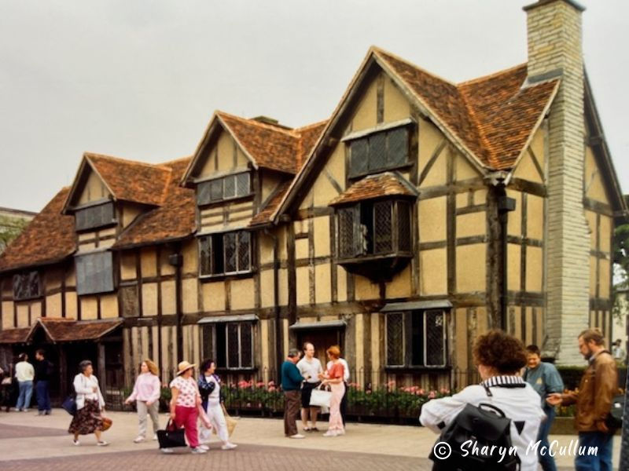

Stratford-upon-Avon is the birthplace of William Shakespeare and home to historical Tudor architecture and the Royal Shakespeare Theatre.
Stratford-upon-Avon is a historic market town in Warwickshire, England, best known as the birthplace of the legendary playwright William Shakespeare. The town attracts visitors from all over the world who come to explore the sites associated with Shakespeare’s life, including his birthplace, Anne Hathaway’s Cottage, and the Royal Shakespeare Theatre, where many of his plays are still performed today.
Shakespeare's legacy is deeply woven into the fabric of Stratford-upon-Avon, and his influence is celebrated throughout the town. Every year, the Shakespeare Birthplace Trust hosts festivals and events that bring his works to life. In addition to Shakespeare's legacy, the town is known for its beautiful Tudor-style architecture, scenic river views, and quaint streets lined with shops, cafes, and pubs.
Stratford-upon-Avon is also home to the beautiful Bancroft Gardens and the River Avon, which provide picturesque surroundings for relaxation and sightseeing. The town's rich history, combined with its connection to one of the greatest writers in history, makes Stratford-upon-Avon a must-visit destination for those interested in literature, history, and culture.
Back to Menu